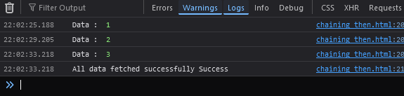
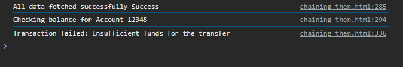

Chaining then :
function asyncFunc1(){
return new Promise((resolve, reject) => {
setTimeout(() => {
console.log('data 1 ');
resolve('Async function 1 successful');
}, 4000);
});
}
function asyncFunc2(){
return new Promise((resolve, reject) => {
setTimeout(() => {
console.log('data 2 ');
resolve('Async function 2 successful');
}, 4000);
});
}
/*
console.log('fetching Data 1...')
let p1 = new asyncFunc1();
p1.then((res)=>{
console.log(res);
let p2 = asyncFunc2();
console.log("fetching Data 2...")
p2.then((res)=>{
console.log(res);
});
});
*/
or
asyncFunc1().then((res)=>{
console.log(res);
console.log("fetching Data 2...")
asyncFunc2().then((res)=>{
console.log(res);
});
});
Output :
Actual Chaining :
function getData(dataId){
return new Promise((resolve, reject)=>{
setTimeout(()=>{
console.log('Data : ', dataId);
resolve('Success');
},4000)
});
}
getData(1)
.then((res) => {
return getData(2);
}).then((res) => {
return getData(3);
}).then((res) => {
console.log('All data fetched successfully',res);
});
Output :

Bank Transaction Process with Error Handling
function checkBalance(accountId) {
return new Promise((resolve, reject) => {
setTimeout(() => {
console.log(`Checking balance for Account ${accountId}`);
resolve('Balance checked');
}, 3000); // Time taken to check balance
});
}
function transferMoney(amount) {
return new Promise((resolve, reject) => {
setTimeout(() => {
if (amount > 1000) {
reject('Insufficient funds for the transfer'); // Simulating failure
} else {
console.log(`Transferring money: $${amount}`);
resolve('Money transferred');
}
}, 2000); // Time taken to transfer money
});
}
function sendConfirmation() {
return new Promise((resolve, reject) => {
setTimeout(() => {
console.log('Sending confirmation...');
resolve('Confirmation sent');
}, 1000); // Time taken to send confirmation
});
}
// Using Promise chain with error handling
checkBalance(12345) // First step: Check balance
.then((res) => {
return transferMoney(1500); // Simulate failure: Amount is too high
})
.then((res) => {
return sendConfirmation(); // Third step: Send confirmation
})
.then((res) => {
console.log('Transaction completed successfully!');
})
.catch((err) => {
// This will handle any failure in the promise chain
console.log('Transaction failed:', err);
});
Output :
